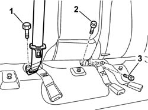
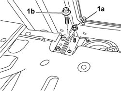
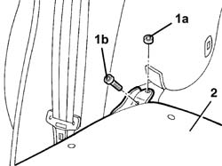

7050A15 SPLIT REAR SEAT RIGHT SQUAB R R
- Path
- Procedures > 70 FITTINGS > 7050 REAR SEATS > 7050A REAR SEAT ASSEMBLY > 7050A15 SPLIT REAR SEAT RIGHT SQUAB R R
- Kind
- repair procedure (removal / refitting; the operation number is the code)
- Applies to
- all engines; all production periods
- Interactive page
- https://sloeber94.github.io/elrnDB-aGt/en/#/125001939
Applies to: all engines; all production periods
 Removing
Removing
 Refitting
RefittingOp. 7050A22 REAR SEAT CUSHION - R+R
(right side)
Op. 7040B10 LOAD PLATFORM (LUGGAGE PLATFORM) TRIM - R+R
1. Undo the bolt fixing the end of the middle rear seat belt.
2. Undo the bolt securing the squab to the floor.
3. Undo the bolt fixing the backrest connecting pin.

Applies to: all engines; all production periods
Lower the squab.
1. Undo the middle nut (1a) and bolt (1b) fixing the backrest to the floor.

Applies to: all engines; all production periods
1. Undo the side nut (1a) and bolt (1b) fixing the backrest to the floor.
2. Remove the rear seat right backrest.

Applies to: all engines; all production periods
Refitting
RemovingCheck that the squab is not damaged.
Position the squab.
Tighten the middle nut and side nut fixing the backrest to the floor.
Tighten the middle bolt and side bolt fixing the backrest to the floor.
 | Fastening | Component | Ø | Value (daNm) |
|---|---|---|---|---|
- | Nut | REAR SEAT BACKREST JOINTS. | M10 x 1.25 | 35 |
| Fastening | Component | Ø | Value (daNm) |
|---|---|---|---|---|
- | Bolt | REAR SEAT BACKREST JOINTS. | M10 x 1.25 | 35 |
Lift the squab.
Tighten the bolt fixing the backrest connecting pin.
Tighten the front bolt fixing the backrest to the vehicle floor.
| Fastening | Component | Ø | Value (daNm) |
|---|---|---|---|---|
- | Bolt | REAR SEAT BACKREST JOINTS. | M10 x 1.25 | 35 |
Check that the engagement device is working properly.
If necessary, adjust the striker .
Op. 7050A45 STRIKER OF ONE SPLIT REAR SEAT SQUAB FASTENING RELEASE DEVICE ONE LH OR RH R R
Fit the end of the middle rear seat belt in position and secure it with the bolt.
| Fastening | Component | Ø | Value (daNm) |
|---|---|---|---|---|
- | Bolt | REAR SEAT BELT END. | - | 4 |
Op. 7050A22 REAR SEAT CUSHION - R+R
(right side)
Topics linked from this page (4)
- 7040B10 LOAD PLATFORM (LUGGAGE PLATFORM) TRIM - R+R
- 7040H80 PARCEL RACK
- 7050A22 REAR SEAT CUSHION - R+R
- 7050A45 STRIKER OF ONE SPLIT REAR SEAT SQUAB FASTENING RELEASE DEVICE ONE LH OR RH R R
Topics that link to this page (10)
- 1040A10 FUEL TANK - R + R AND DECANT FUEL
- 1040A14 FUEL TANK - R + R FOR REPLACEMENT
- 1040A30 OIL SEAL COVER, FLY WHEEL SIDE - R + R AND REPLACE SEALS
- 1040A70 SUBMERGED PUMP ASSEMBLY COMPLETE WITH LEVEL GUAGE CONTROL - R + R
- 5505C41 CABIN WIRING - R R
- 7050A35 MOUNT (ONE) FITTING REAR SEAT TO FLOOR - R R
- 7050A43 ONE SPLIT REAR SEAT SQUAB FASTENING RELEASE DEVICE R R
- 7050A70 LH OR RH DEVICE WITH CABLE (ONE) OF ONE REAR SEAT SQUAB CATCH R R
- 7065B18 CENTRE REAR SEAT BELT - R.R.
- 7065B26 CABLE FOR ATTACHING RELEASING REAR CENTRAL SEAT BELT REEL R R